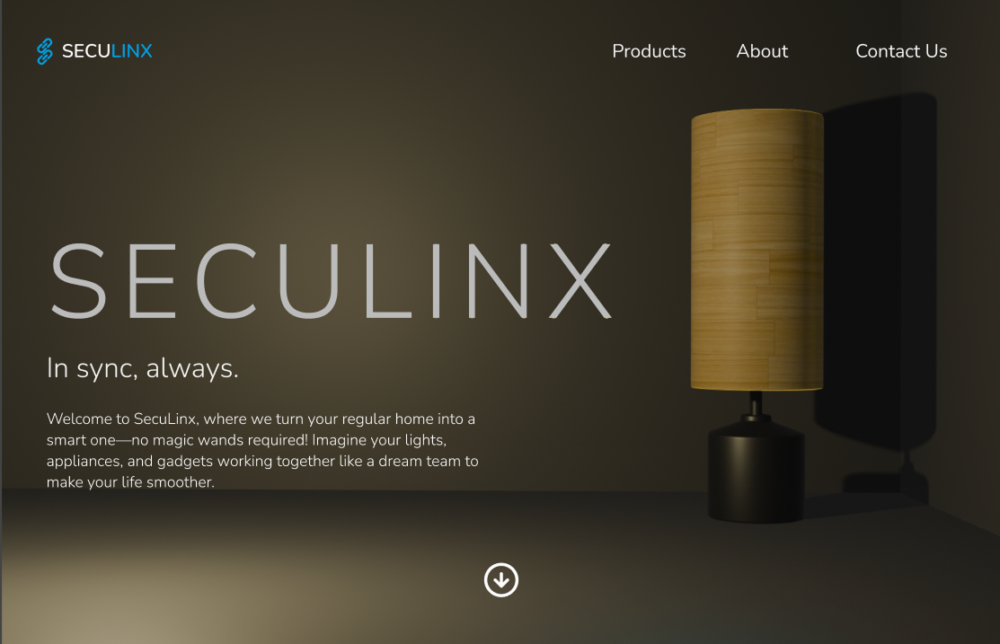
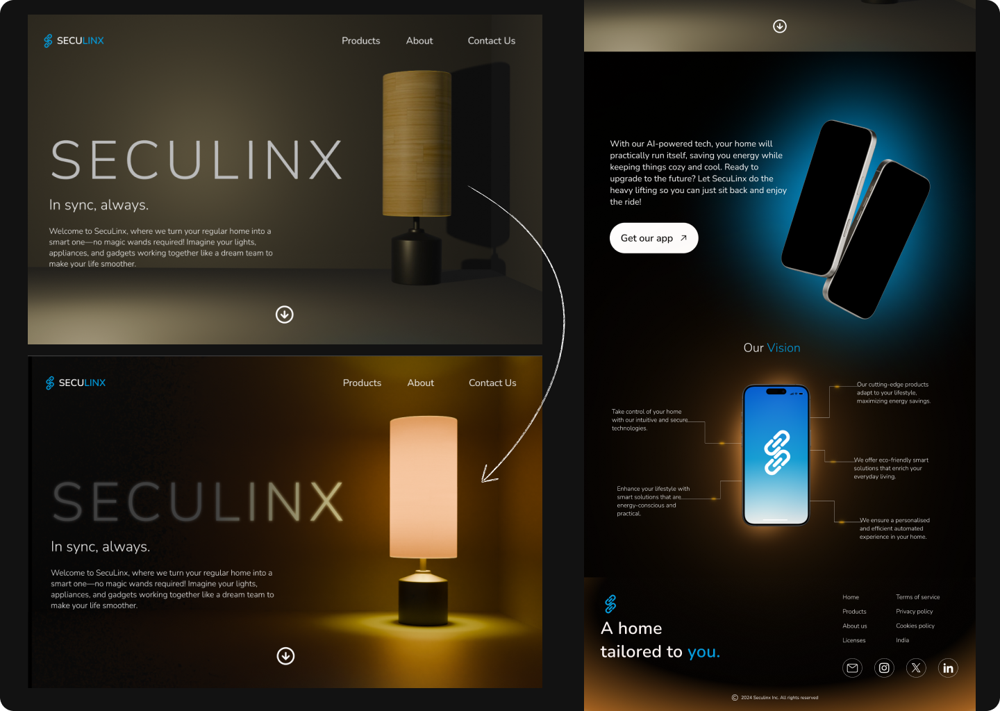
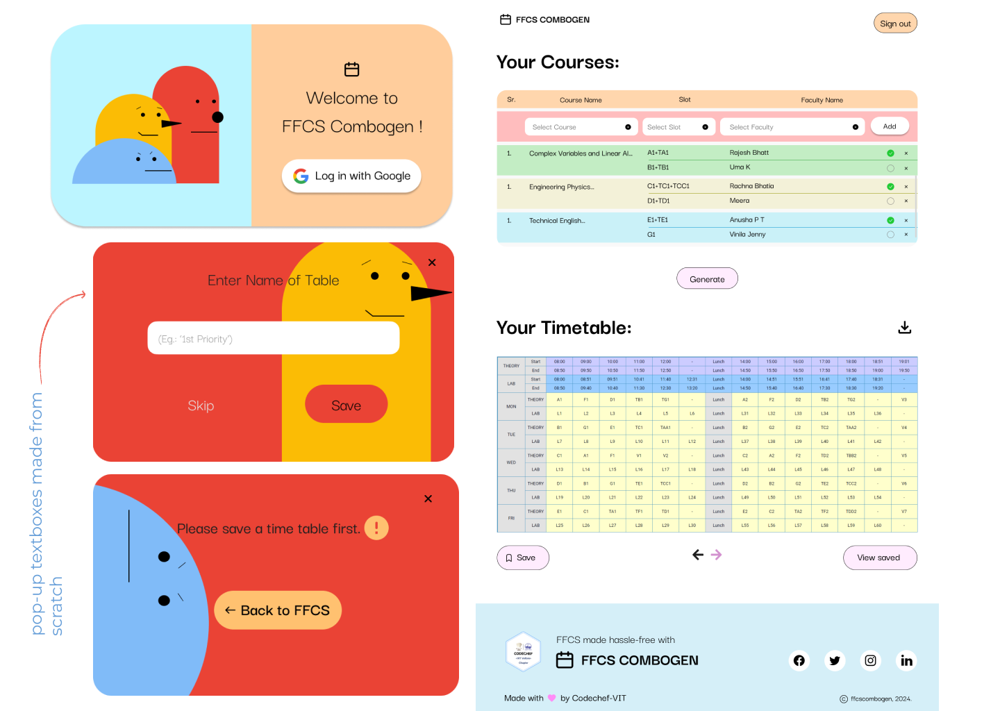
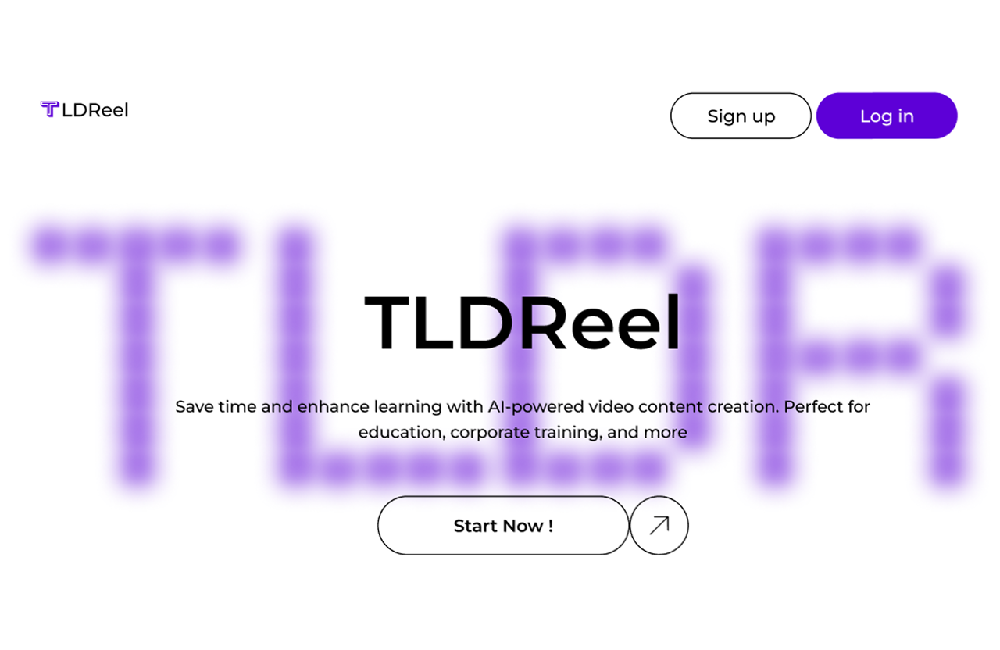
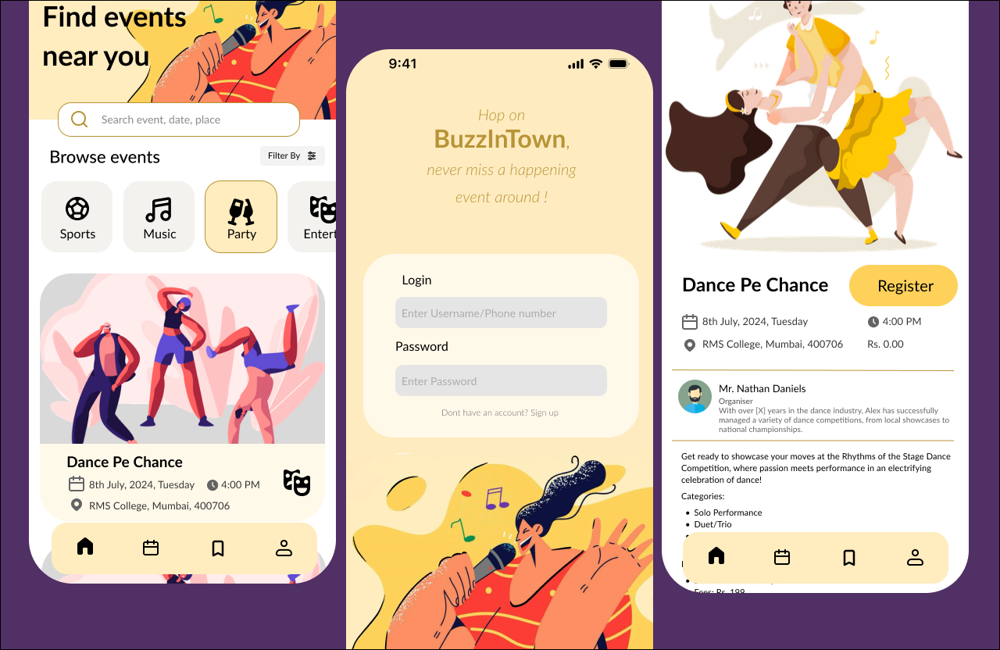
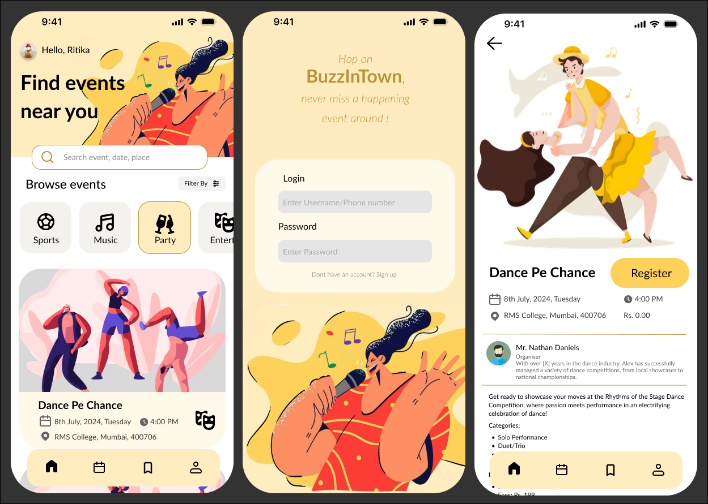

My Work

Project 1: Seculinx
A futuristic yet cozy homepage designed for an AI-powered smart home startup, with custom 3D Blender visuals and smooth micro-interactions.
Seculinx — Interactive Website for a Home Automation Startup
Internship Project | May–July 2024


As part of my internship at a home automation startup, I designed and developed an introductory website for Seculinx.
> The company wanted a sleek, modern aesthetic with a dark edge to reflect the advanced nature of their smart home solutions.
> I incorporated luminous design elements to mimic the behavior of light, aligning with their core feature of controlling home lighting.
> To elevate user engagement, I created an interactive 3D model in Blender featured on the homepage. The final website delivers a visually immersive experience that presents the brand in a compelling, futuristic style.

×

Project 2: FFCS Combogen
A colorful and fun tool designed to simplify the FFCS (Fully Flexible Credit System) process at VIT.
FFCS ComboGen — Simplifying the FFCS Process
As part of CodeChef Club


FFCS ComboGen is a playful yet practical tool designed to simplify generating class combinations for VIT's FFCS system.
> Built with a strong focus on user experience, the interface mimics the feel of building blocks using vibrant, fun colors to make planning timetables feel less like a chore.
> Users can easily add subjects and teachers at the top and instantly see a clean, visually organized timetable below — every step is intuitive.

×

Project 3: TLDreel
An educational video platform that condenses lengthy content into short, engaging reels for quick learning.
TLDReel
Designed and built in 48 hours during a hackathon


TLDReel is an AI-driven educational platform that converts long-form learning material into short, scrollable reels ideal for revision and fast-paced content consumption.
Every design decision was made with clarity and inclusivity in mind — minimal, distraction-free, and accessible to users of all ages. Despite the high-pressure 48-hour window, the experience feels intuitive, modern, and smooth across devices.
I also created all visual assets from scratch to maintain a consistent and original design language throughout.

×

Case Study: Event planner app
A UX case study on a community event ticketing platform, focusing on inclusive design and streamlined user flows.
UX Case Study: Local Event Ticketing Platform
Goal: Make discovering and booking local events easy, fast, and inclusive.
Designed a community event ticketing platform with a focus on clear navigation, smooth payment flow, and accessibility for all ages. Through journey mapping, user personas, and competitor analysis, I identified pain points like overwhelming listings, unclear pricing, and clunky checkout processes.



My focus: Inclusive design, simplified user flows, and a trust-building interface.
Role: UX Research · Journey Mapping · Strategy
×

Project 5: Global Trend
A bold, high-contrast website for a digital marketing agency, built to feel confident, modern, and results-driven.
Global Trend - Website for a Digital Marketing Agency
Personal / Freelance Project


Global Trend needed a website that didn't just list services, but felt like proof of the agency's own marketing power, bold, current, and impossible to scroll past without noticing.
> I leaned into a stark black-and-white palette with sharp red accents to give the brand an editorial, high-impact feel, paired with an oversized condensed type treatment for headlines like "Lead the Change" and "Why Choose Us."
> The Services section uses a clean repeating card pattern (Digital Marketing, Creative Website Design, SEO) so visitors can scan offerings quickly without losing the visual energy of the page.
> A dedicated testimonials carousels were added to build trust and answer objections before a visitor ever has to reach out, supporting the final "Reach Out" call-to-action section.


×
About Me
I'm a UI/UX designer who believes that design should adapt to the story it's telling. Whether it's minimalist, futuristic, or something more experimental, I tailor my style to fit the concept perfectly. I love crafting immersive and interactive experiences, often using tools like Blender to bring a creative edge to my work.
While I enjoy playing with color, layout, and creative elements, I also pay close attention to user experience. Good design is not just about aesthetics — it's about making things intuitive, accessible, and enjoyable for everyone.
Skills
Get In Touch
Email: jadhavritika08@gmail.com